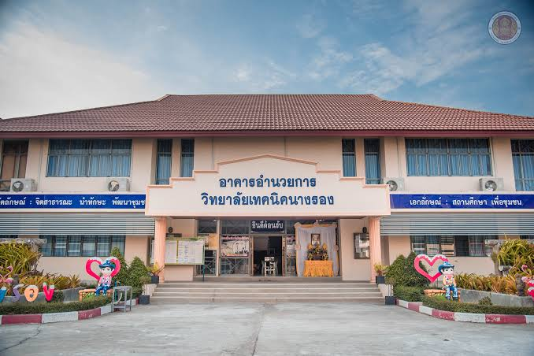
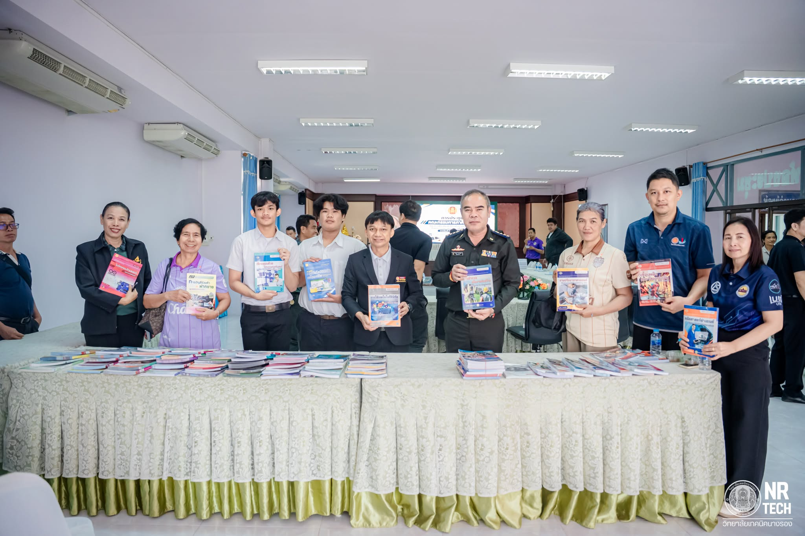

เกี่ยวกับวิทยาลัย
วิทยาลัยเทคนิคนางรองเป็นสถานศึกษาด้านอาชีวศึกษา มุ่งเน้นการจัดการเรียนรู้และพัฒนาทักษะวิชาชีพ เพื่อเตรียมความพร้อมให้ผู้เรียนสามารถนำความรู้ ไปประยุกต์ใช้ในการทำงานและการศึกษาต่อ

วิสัยทัศน์และเป้าหมาย
มุ่งมั่นจัดการอาชีวศึกษาให้มีคุณภาพตามมาตรฐานสากล พัฒนาผู้เรียนให้มีสมรรถนะ คุณธรรม และจริยธรรม พร้อมตอบสนองความต้องการของตลาดแรงงานและสังคม
ภาพกิจกรรมและบรรยากาศ
วิทยาลัยเทคนิคนางรองจัดการประชุมคณะกรรมการภาคี 4 ฝ่าย เพื่อหารือและพิจารณาแนวทางการดำเนินโครงการสนับสนุนค่าใช้จ่ายในการจัดการศึกษา ตั้งแต่ระดับอนุบาลจนจบการศึกษาขั้นพื้นฐาน ประจำภาคเรียนที่ 2 ปีการศึกษา 2569
